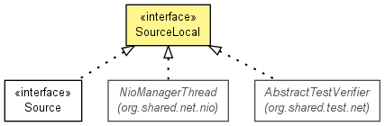

JavaScript is disabled on your browser.
Overview
Package
Class
Use
Tree
Deprecated
Index
Help
Prev Class
Next Class
Frames
No Frames
All Classes
Summary:
Nested |
Field |
Constr |
Method
Detail:
Field |
Constr |
Method
org.shared.event
Interface SourceLocal<T extends
Event
<T,?,?>>

Type Parameters:
T
- the
Event
type.
All Known Subinterfaces:
Source
<T,S>
All Known Implementing Classes:
AbstractTestVerifier
,
AbstractTestVerifier.AbstractReceiverVerifier
,
AbstractTestVerifier.AbstractSenderVerifier
,
EventProcessor
,
NioConnection
,
NioManagerDispatchThread
,
NioManagerIoThread
,
NioManagerThread
,
TestXmlEvent.ReceiverXmlVerifier
,
TestXmlEvent.SenderXmlVerifier
,
TestXmlHandler
,
XmlHandler
public interface
SourceLocal<T extends
Event
<T,?,?>>
Defines the local manifestation of an originator
Event
s.
Method Summary
Methods
Modifier and Type
Method and Description
void
onLocal
(
T
evt)
Delivers an
Event
to the local manifestation.
Method Detail
onLocal
void onLocal(
T
evt)
Delivers an
Event
to the local manifestation.
Overview
Package
Class
Use
Tree
Deprecated
Index
Help
Prev Class
Next Class
Frames
No Frames
All Classes
Summary:
Nested |
Field |
Constr |
Method
Detail:
Field |
Constr |
Method